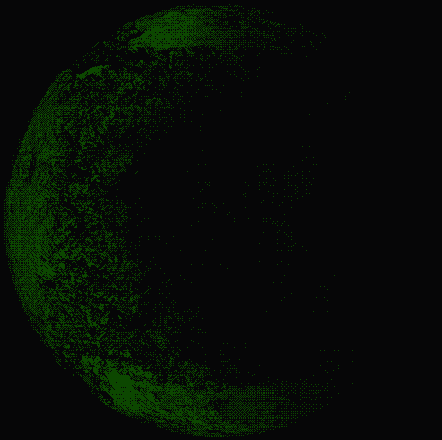

Information is power. Privacy and transparency are two antithetical dimensions of information. Transparency must apply to those in power, to lay open their machinations and hold them accountable. Privacy is for the people, to prevent the agents of power from intruding in the innermost parts of our individual and social existence.
The mouthpieces of the surveillance state claim that our sanctuaries and agoras are enabling criminals to sell drugs, weapons and human beings. They us this as an excuse to block our access to DeFi and privacy tools. All the while the crimes we stand accused of are carried out day by day on a massive scale by well-connected and legally protected people, aided by national governments, their courts and law enforcement bodies. While attacking tools that empower people, they commandeer the black market and launder money through esteemed international banks.
“Hegemonic nation-states and their financial institutions have control over our lives. As long as we depend on their money we have no choice but to live under the dominion of empires.”
Hegemonic nation-states and their financial institutions have control over our lives. As long as we depend on their money we have no choice but to live under the dominion of empires. Banks track and control the money flow and can freeze assets at any time. They tempt us with the illusion of wealth, making us believe that we are part of the big game, when really we are expropriated. We are the yield.
Decades ago, cypherpunks foresaw the rise of censorship and surveillance. They understood that cryptography and economic sovereignity were necessary to ensure freedom. Bitcoin created an economy outside of financial hegemony and made it possible for people to regain agency.
Today that is no longer enough.
Crypto’s resistance to capture makes it a target. And so the surveillance state is on the attack. It has already started to make our software illegal. We are forced to self-regulate to survive. Anyone who falls into this trap has already lost.
Over the years, the voices upholding the cypherpunk mission have become fewer and quieter, drowned out by a flood of easy money. The advocates of crypto's liberatory mission lack unity as well as strategy.
LunarDAO provides such a strategy.
There are no institutions in this world that safeguard freedom. Those that try to are being denounced as criminal and terrorist, co-opted, marginalized and violently crushed. The existing establishment only maintains and intensifies our enslavement. We, the people, must create new worlds to live a free life.
This is why lunarpunks gather in the periphery rather than the center. We make our home in moonlit forests of encryption outside the reach of the state. We refuse to leave our protection in the hands of governments and Big Tech. We consider self-defense to be everyone's responsibility.
Rulers maintain authority by keeping people isolated. When we are alone, we cannot build the strength to change our realities. That is why lunarpunks are not content with the modern mirages of individual liberty. We form squads, clans and communities and fight for collective liberation.
Freedom can only be found outside the logic of domination. Self-defense requires a philosophy rooted in liberation and adequate tools. We must bypass the all-pervasive mindset of submission and obedience.
Decentralized, private and anonymous networks are fundamental for communities to defend themselves. Self-defense requires control over information, infrastructure and material resources. Lunarpunks use zero-knowledge cryptography to create a shield of privacy and anonymity that enables communities to operate without persecution by the state.
✧ Enable parallel confederated societies that are diverse and autonomous but mutually protect each other against central authority.
✧ Learn, educate, share knowledge. Education is fundamental in our struggle for free life, autonomy, and community.
✧ Develop infrastructure for economy and politics beyond the state, that is uncensorable, sovereign and anonymous. Expand the dark forest.
LunarDAO invests in privacy projects and anonymity-oriented tooling for the lunarpunk society. By prioritizing technical excellence, practicality and an uncompromising philosophy of freedom it creates value building towards a self-sustaining antifragile ecosystem. We believe that lunarpunk is not something distant. It is available to anyone who is ready to make a choice: to let nation-states control our lives or to join the fight for freedom.
Anyone can join LunarDAO and start a new investment project or take part in an existing one. Learn how to use free software and privacy tools, extend the reach of infrastructure, exit Big Tech and the surveillance state, learn programming, study economics and build the counter-economy.
Sunset arrived.
The moonlit night is coming.